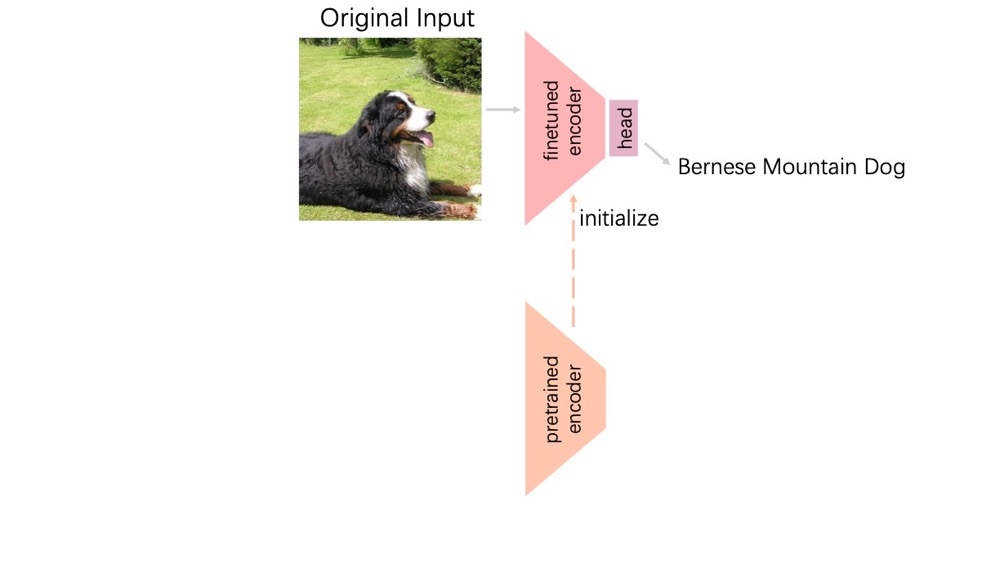
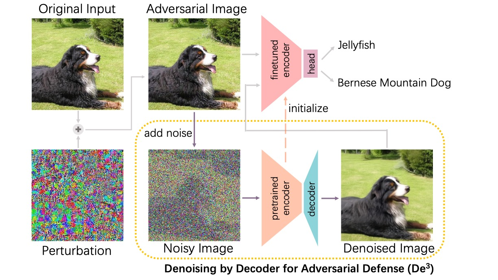
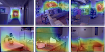
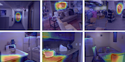
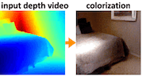
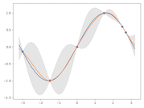

SmoothTurn: Learning to Turn Smoothly for Agile Navigation with Quadrupedal Robots
We study how quadrupedal robots can learn to turn smoothly while running.
I am a PhD student at the University of Sydney, supervised by Associate Professor Chang Xu. My current research centres on learning robot policies with latent world models. I am particularly interested in closed-loop formulations in which policy learning and world modelling provide reciprocal learning signals and improve jointly through interaction.
I graduated from the School of Computer Science and Engineering at Sun Yat-sen University, where I was advised by Professor Guanbin Li. I have also worked with Professor Wei-Chen Chiu and Dr Yi-Hsuan Tsai during a visit to National Chiao Tung University, and later visited the SNU CVLab under Professor Bohyung Han.
We study how quadrupedal robots can learn to turn smoothly while running.


Noisy image modelling offers adversarial robustness in addition to useful pretrained features.


We quantify interpretability in monocular depth estimation networks and develop a method to improve it.

We develop a method for colourising a depth map with photorealistic appearance.

Gaussian Process Regression: Derivation, Implementation, and Understanding A Chinese-language tutorial covering the derivation, a small implementation, and the algorithm’s key assumption.